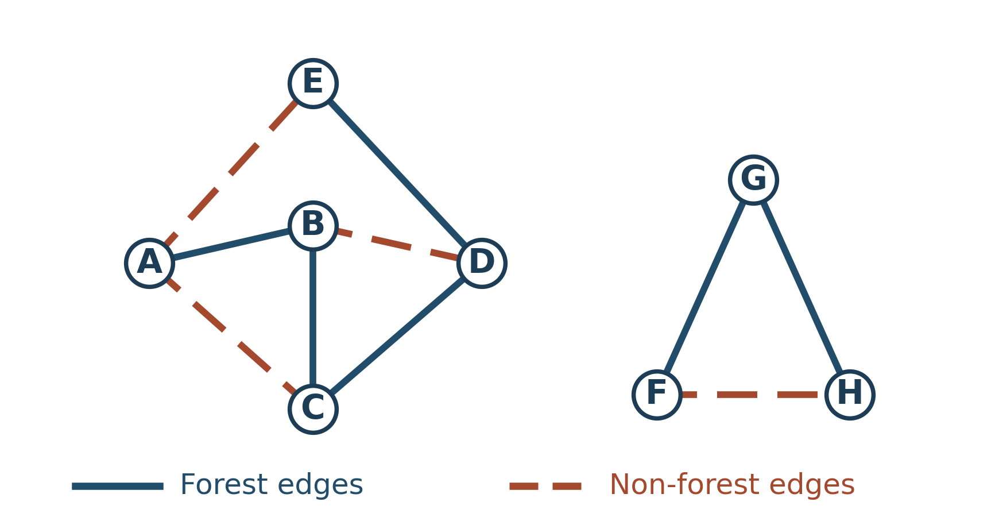

图论与线性代数 · 建议先独立思考 15–25 分钟。这是量化面试风格的原创题面，未指称具体公司的面试出处。
主问题
给定一张有限无向图，没有自环或重边，允许有多个连通分量、也允许有孤立点。全图有 n 个顶点、m 条边、c 个连通分量，孤立点也算一个分量。
从图中选一些边，令每个顶点碰到的已选边数都是偶数。把这样的边集称为“偶边集”，空集也算。你可以先列出一份由简单回路组成的清单，每个回路只用它的边集合表示。给定任意目标偶边集，从清单中挑若干回路叠加：某条边出现奇数次就留下，出现偶数次就抵消。
问：清单最少要列多少个回路？给出达到最少数量的构造，并证明不能更少。对这张样例图，也写出一份具体清单。样例有 A、B、C、D、E、F、G、H 八个顶点，边仅为 AB、BC、CD、DE、AC、BD、AE、FG、GH、FH。
追问
仍是同一张一般的图。现在给每条边一个要求：0 表示两端顶点必须同色，1 表示必须异色。每个顶点只能涂 0 或 1；包括孤立点在内的所有顶点也都必须着色，交换颜色视为不同方案。请给出一组足以判定所有要求能否同时满足的回路检查，证明检查全通过与可行等价，再求可行时的方案数。
用样例核对：仍按上面十条边的顺序，其要求依次为 1、0、1、1、1、1、1、1、1、0。它能满足吗？
分级提示，卡住再看
提示一：在每个连通分量里，保留足够让所有顶点继续连通的边，但尽量不保留多余的边。
提示二：从保留的边出发，一次只补回一条没保留的边，追踪它的两个端点之间有哪些路径。对于任意目标偶边集，试着先处理那些没保留的边。
提示三：若两个偶边集在所有没保留的边上完全相同，叠加后只差保留的边。这样的差能非空吗？追问里先选定每个分量一个顶点的颜色，再检查还没用来决定颜色的边。
完整解答，想好再看
先为每个连通分量选一棵生成树：它覆盖这一分量的所有顶点，保持连通又没有回路。可以从任一顶点起步，每次只连一个尚未连入的邻点；分量连通，所以最后都能连上，也不会形成回路。有 k 个顶点就加入 k−1 条边；汇总所有分量，得到一片有 n−c 条边的生成森林。


每补回一条森林外的边，它的两个端点之间原来就有唯一一条树路径。这条路径与补回的边合成一个简单回路，称为基本回路。森林外有 m−n+c 条边，对应同样多的基本回路。
| 补回的边 | 样例的对应基本回路 |
|---|---|
| AC | A–B–C–A |
| BD | B–C–D–B |
| AE | A–B–C–D–E–A |
| FH | F–G–H–F |
为什么能拼出所有偶边集？给定一个目标，先看它用了哪些森林外的边。对每条用到的边，把它的基本回路与目标叠加一次。这条边在对应回路里出现，同时不会出现在其他基本回路里，所以森林外的边恰好全部抵消。每次叠加都保留顶点度数的奇偶性，剩下的仍是偶边集，并完全位于森林里。
非空的森林边集必有一个度数为 1 的顶点：任选其中某个有边的树分量，取最长简单路径的一个端点；若它另有邻点就能延长路径，或者会形成回路。两者都不可能。因此森林里的偶边集只能为空，刚才叠加的那些基本回路正好拼出原目标。比如样例里叠加 AC 与 BD 对应的两个回路，共有的 BC 消去，留下 A–B–D–C–A。
为什么不能更少？这批基本回路的任何两个不同子集，在至少一条森林外的边上不同。特别地，非空的一组基本回路绝不会全部抵消，这就是这里的“独立”。把每条边的在或不在记成 1 或 0，叠加就是在二元域 F₂ 上逐边相加，也叫边集合的对称差。因此若记 q=m−n+c，恰有 2 的 q 次方个不同偶边集。任何只含 k 个回路的清单最多有 2 的 k 次方种选法，不够覆盖时就不能生成全部偶边集。所以 k 至少是 q，前面的构造达到下界。样例最少 4 个。
追问。把相同记成 0，不同记成 1，沿任意路径把边要求异或（相加后只留奇偶），就得到首尾必须相同还是不同。若走完一个回路回到出发点，首尾是同一点，所以回路上所有要求的异或必须是 0。
只检查上面得到的基本回路就够。每棵树先任选根的颜色，再沿树边传播：遇到要求 0 就保持颜色，遇到要求 1 就翻色。树路径唯一，每个顶点会得到一个确定颜色，所有树边自然满足。对任意森林外的边，其端点的颜色差已被树路径决定；它与这条边自己的要求一致，恰好等价于对应基本回路的异或为 0。全部检查通过就得到可行着色；任何一个不通过就必不可行。
反过来，任何可行着色一旦固定每棵树的根色，其余顶点颜色都被树边确定。因此如果可行，每个分量的根有两种取值，合计 2 的 c 次方种。孤立点不受边约束，也贡献两种。比如给样例多添一个孤点 I，不加任何边，n 和 c 各增 1，最少回路数不变；I 自由着色，可行方案数翻倍。
样例的四个基本回路都通过。以 A、F 为根并取 0，可得到 A 至 H 的着色依次为 0、1、1、0、1、0、1、0。两个分量各可翻色，正好四种。只把 AC 的要求从 1 改成 0 时，A–B–C–A 的异或就会变成 1，整图不可行。
两个常见误区：把图上所有看得见的简单回路都计作独立；或者绕过森林就把顶点数减一写进公式，漏掉其余分量。这里讨论的是边只看出现奇偶的无向回路；如果换成有方向、带实数流量的守恒式，要另行定义边的方向与线性组合。
本题的新增点是用同一棵树的路径做两件事：为偶边集建立坐标，再为带标签的边构造可行顶点颜色。它不需要事先列举全图所有回路。